The average person spends less than 13 seconds on a website. How can we show them what we are about, and make sure that stand out? This is one of the things I started to explore after starting the MarbleIT rebranding project. Something different, and creative as the company itself.
I continued to develop the brand’s positioning, vision statement, voice, and visual identity.
Client: MarbleIT
Role: Art & Creative Director, Web Designer
Date: 2020
After doing research and going through the brand guide we finished, I realized that it would be best to go 3D. We used 3D animation to convey how MarbleIT is simple, fun and free, yet powerful and full of potential. Among that, showing the youthful and playful spirit that we are known for. This project allowed us to experiment with new development stacks. One of which was three.js. The developers had a lot of fun working with the models and manipulating them. In the end, we all learned more about 3D on the web which will surely help us in future projects.
“Life is a first impression. You get one shot at it.
Make it everlasting.”
― J.R. Rim
Our goal for the interface design was to make it stand out and be remembered, something people would want to return to and see again. We opted for a predominantly red color, thrilling without being bloody. I included contrasting typography, letting the headers stand out. No unnecessary capitalizations but a clear sans-serif body font (Roboto), in combination with a quirky font (Montserrat Alternates) for the headers.
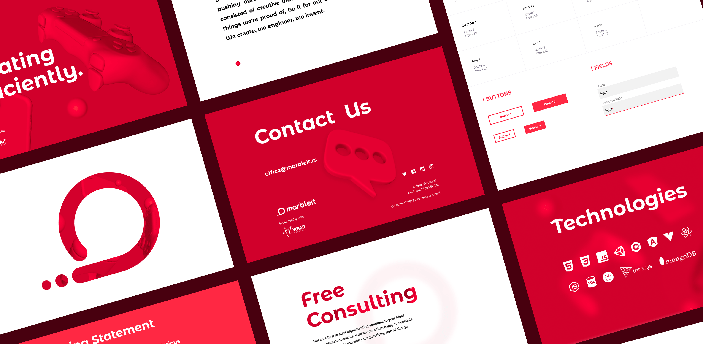
The management team consisted of three people and the development team of four. I wanted everyone to be able to see the project as it was being designed, explained and developed, real-time. That is why I chose Figma instead of Sketch or XD. And as I thought, it’s “code generator” feature came in handy for the developers. I explained the whole program to all of them and organized the pages and Trello board with the project manager. I created the wireframes, design system, components, mockups, and interactive prototypes, after which I overlooked the development process.
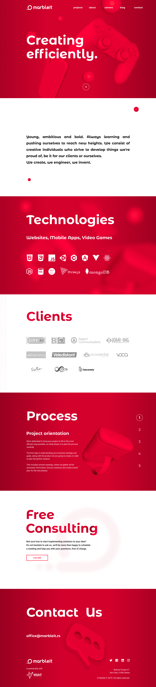
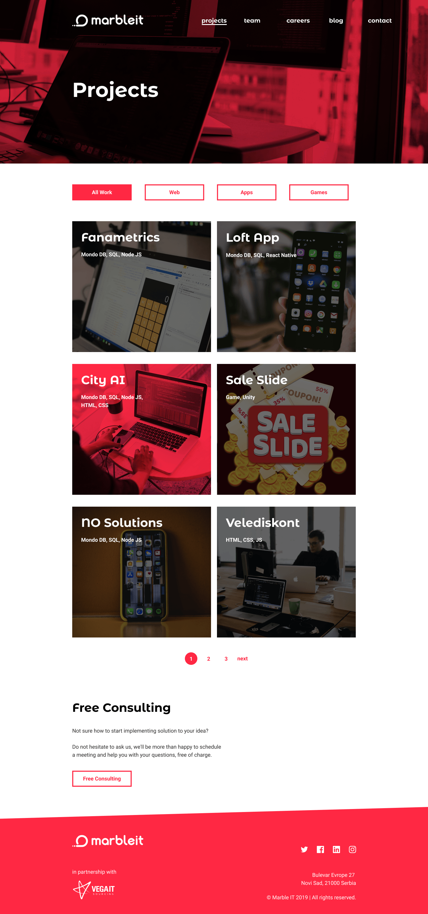
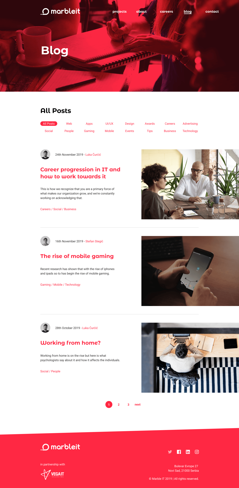
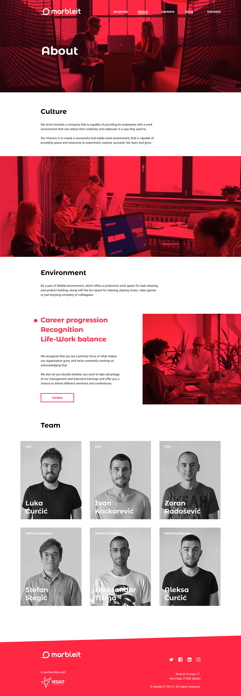
The goal was to make 3 objects that were not too abstract and represent the platforms and technologies we are keen on developing. I jumped into Cinema 4D and Blender to build the models needed. It also allowed me to try several looks and points of view by locking cameras for later when something looked nice. After we optimized the models we exported the gltf files and the developers began manipulating them under my suggestions. I decided that it would be best to make them rotate on hover instead of drag as it was not intuitive to everybody, plus avoiding other complications.
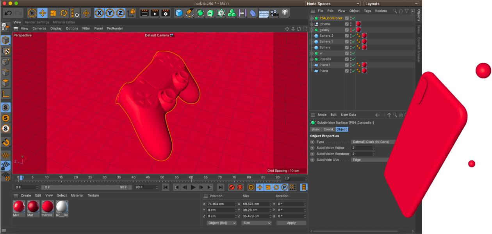
52.2% of all website traffic worldwide is generated through mobile phones at this point. So making sure that the mobile version of the websit structured and simple to use is very important. As for the 3D models they have been disabled, to make the loading faster, as they were not needed and were not interactive on mobile. Instead, we opted for the images I have rendered. The mobile version didn’t take up a lot of time as the responsive components I created earlier helped a lot. I also created Interactive prototypes for us to test and to serve as a direct reference point for the developers.
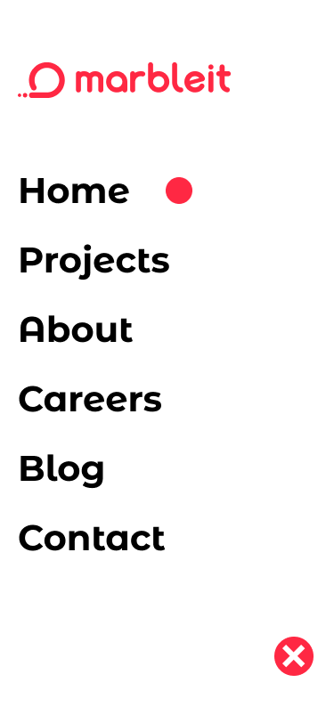
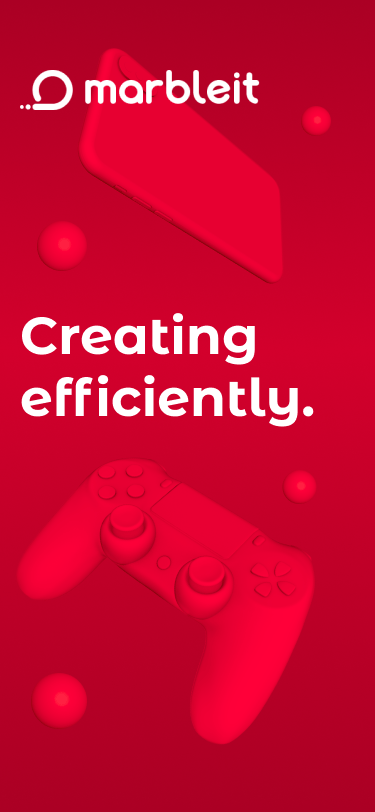
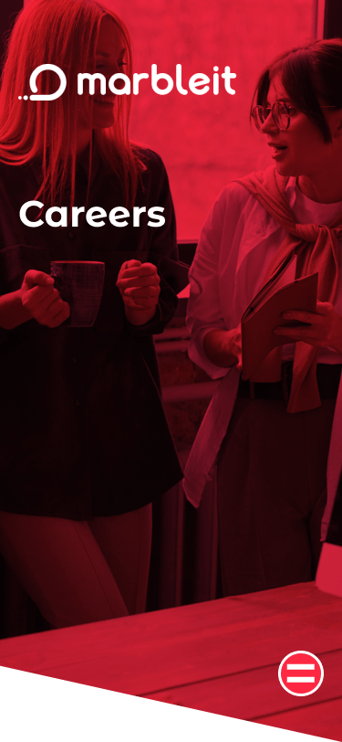
In the end, I made the beloved merchandise. Cards, notebooks, flyers, banners, T-shirts, etc. to finish the complete rebranding of MarbleIT. This was one of the most interesting projects I have worked on because we all learned so much from each other regarding design, management, and development.
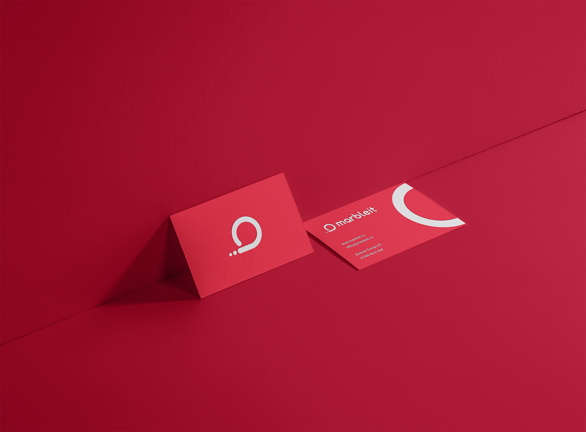
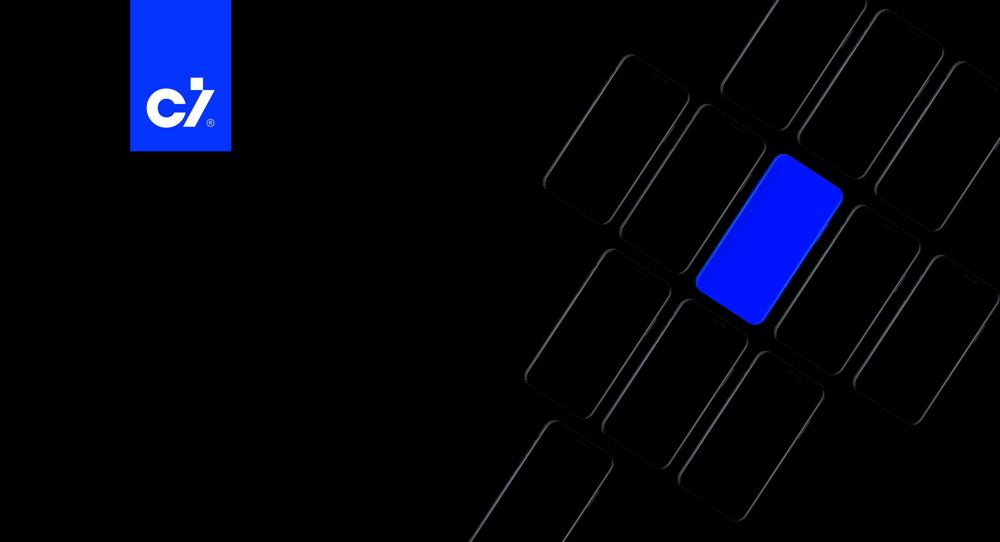